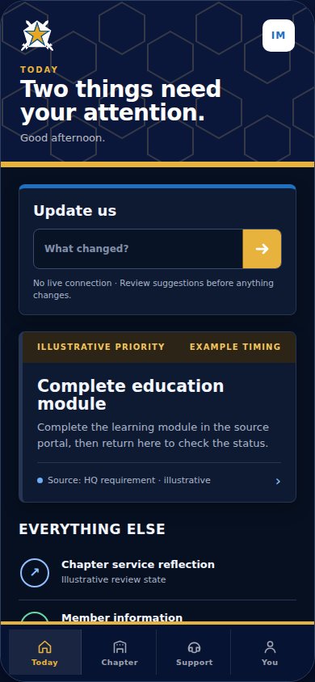
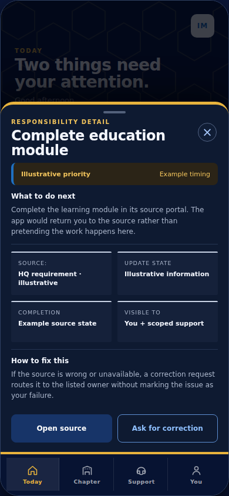
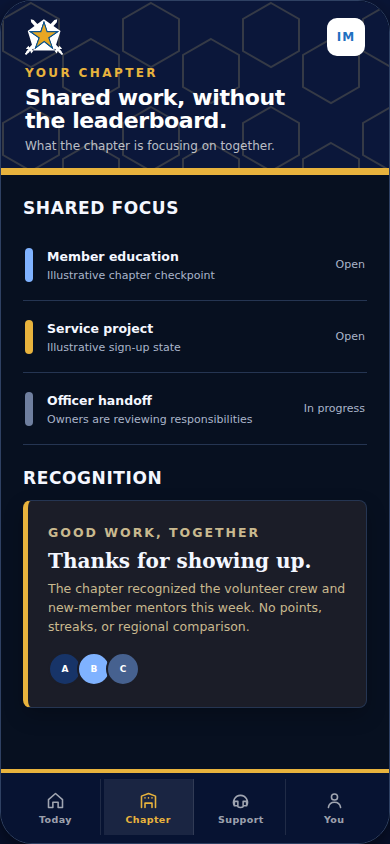
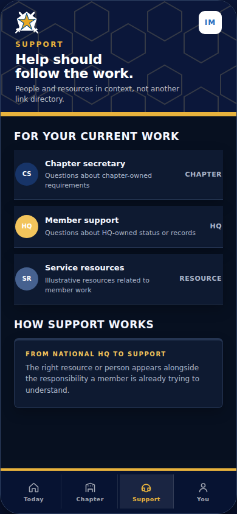
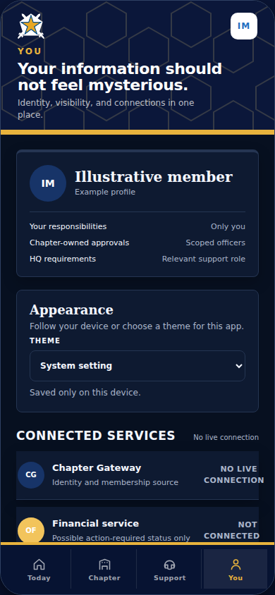
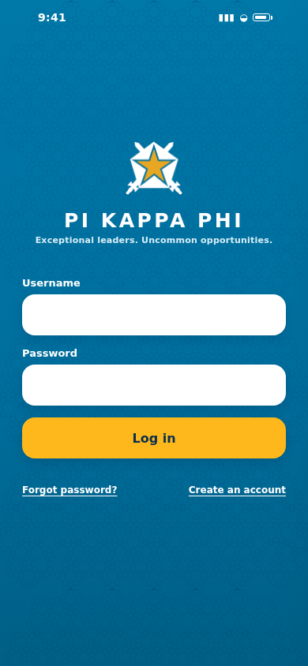
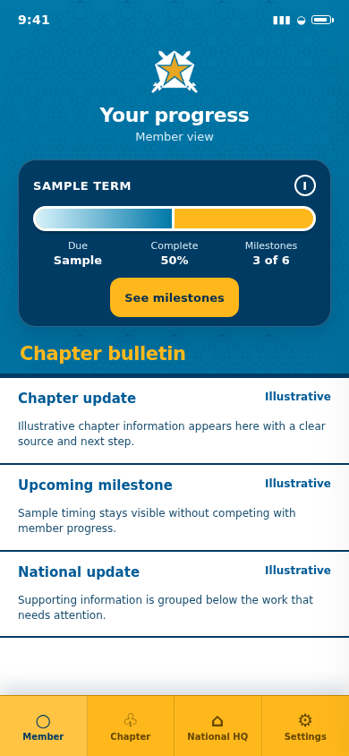
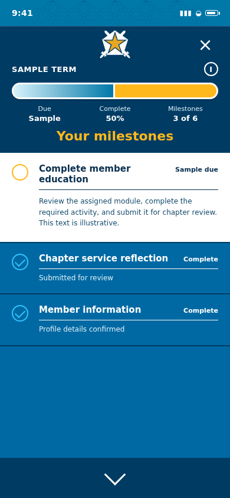

Design
ConceptPi Kapp
App
A mobile concept for helping fraternity members keep track of milestones and stay connected to the organization.
Every year looked a little different. The same stuff still had to get done.
Students already had a lot to keep up with: college, financial responsibilities, fraternity milestones, and the systems around them. As Pi Kapp's lead designer and Assistant Executive Director of Communications, I explored whether one mobile experience could make the member side easier to follow.

I reviewed the resources we already had, including recruitment guides, and spoke with new graduate recruiters, students, executive board members, and chapter administrators. I also drew on my own experience inside the organization.
The same issues kept coming up: information was spread across tools, and the member experience became harder to follow whenever another system entered the mix.
Research context: this was practical internal discovery for an experimental concept, not a funded usability study.
Starting out · Associate member
Sample member 01
Find the first milestones and understand what comes next.
What do I need to do?Helping run it · Chapter secretary
Sample member 02
Keep up with personal progress while helping the chapter stay organized.
What needs attention?Finishing the year · Graduating senior
Sample member 03
See what is finished, what is left, and how to stay connected.
What is still left?
There was already a system. It was just spread everywhere.
Chapter work moved through spreadsheets, Drive folders, PDFs, documents, financial tools, and the existing gateway. I was not trying to replace all of it. I wanted the member-facing part to feel more like one place.
I sketched the main surfaces first, then mapped the content into four destinations: Member, Chapter, National HQ, and Settings.
The member view held personal progress and chapter updates. The other tabs kept chapter standing, national information, and account details nearby without making the dashboard do everything.
About the integrations: I planned around tools Pi Kapp already used, including iMIS and OmegaFi. I did not build or test those connections.

It still needed to look like Pi Kappa Phi.
The final remaster draws from the original app files, the archived Pi Kappa Phi identity, and the strongest interface decisions across the concept. This chapter shows only the pieces used in the final three screens.
Pi Kapp App
Source vocabulary
Color
Brand foundation and interface layers
Brand blue
Identity and recognition
Brand gold
Actions and progress
App cyan
Entry and member view
App navy
Structure and detail
White
Fields and reading
Type
Brand, interface, and status roles
Web-safe brand voice
Interface hierarchy
Short labels keep the next action clear. Supporting text explains only what the member needs in that moment.
Mark & pattern
Original vector mark on its intended field
Original app Star Shield on the cyan hex field
Original vector mark, kept small and crisp inside its intended app layer.
Components
Only the pieces used by the final remaster
Form controls
Member progress card
- Due
- Sample
- Complete
- 50%
- Milestones
- 3 of 6
Bulletin row
Illustrative information appears here with a clear source and next step.
Milestone states
Bottom navigation
The explorations showed what was worth carrying forward.
V1 established the member flow. V2 made part of that model runnable. Later visual studies explored tone, hierarchy, and alternate flows before the final remaster.
Supporting chronology
These materials come from different stages of the concept: original V1 screens, the earlier runnable V2, and later AI-assisted visual studies.
Earlier concept sequence
V1 concept screens.
The sequence shows how the original identity, member dashboard, and milestone detail were explored before the current remaster.


AI-assisted flow studies
Other explorations.
Visual studies for tone, hierarchy, and alternate flows. The final remaster below returns to the source identity.
AI-assisted studies. Illustrative explorations, not research findings.





Chapter 05
The final remaster brings the app back to its source.
The final direction returns to the original cyan field, Star Shield, hex texture, and member flow, then rebuilds the interface for current screens. It keeps the authored identity recognizable while tightening type, spacing, controls, contrast, and accessibility.



Source-faithful remaster. Illustrative concept screens.
A formative project that changed how I approached product design.
This project brought together my experience in leadership and communications with a growing interest in product design and research.
HQ could feel distant from day-to-day chapter life. The app was one attempt to meet students where they already were, on their phones, and make the organization easier to reach. When I shared it with fraternity members, recruitment staff, and HQ colleagues, the feedback was positive, especially around needs the recruitment team already recognized. The concept still needed more definition.
The next step would have been usability testing and a more defined integration model. Even as an experimental concept, it changed how I thought about meeting an audience halfway: start with the systems people already use, then make the member-facing experience easier to understand.